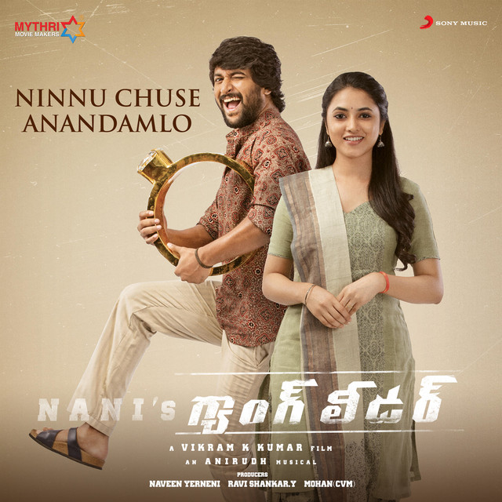

ninnu chusi andumalo
From Jersey

Katha Rayadam Modalukaka,
Mundu Apude Elanti Malupo,
Kala Deniko Telusukoka,
Mundhu Apude Ideymi Talapo,
Ninu Chuse Aanandamlo,
Kanupape Kadalai Ponginade,
Ninu Thaakey Aaraatamlo,
Nanu Nene Vadileysanu Kade,
Arey Bhaaramentha Nuvu Mopina,
Manasu Thelikauthu Undhe,
Ninu Choose Aanandamlo,
Kanupape Kadalai Ponginade,
Katha Rayadam Modalukaka,
Mundu Apude Elanti Malupo.
[instrumental break]
Anuvanuvuna Onuku Reyginadi,
Kanabadadayi Kanulake,
Adugaduguna Aduguthondi Madhi,
Vinabadadadi Chevula,
Medaduki Padi Melikaleysinadi,
Theliyanididi Thelivike,
Idhivarakeruganidi Emitidhi,
Nidarayinadi Nidarake,
Thadava-Thadava Godavadina,
Thagani Thaguvu Padina,
Vidiga Vidiga Visiginchina,
Vidani Mudulu Padena,
Ninu Chuse Aanandamlo,
Kanupaape Kadalai Ponginade,
Ninu Thaake Aaraatamlo,
Nanu Nene Vadileysanu Kade,
Arey Bhaaramentha Nuvu Mopina,
Manasu Thelikauthu Undhe,
Ninu Choosay Aanandamlo,
Kanupaapay Kadalai Ponginaday,
Katha Raayadam Modalukaaka,
Mundu Apuday Elaanti Malupo.
Okatokatiga Panu.